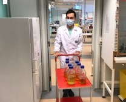

Vårt projekt i år faller inom kategorin cellulärt jordbruk och hållbar matproduktion.
Syntetiskt kött som produceras i labb behöver ett växtmedium att odlas i och de serumfria växtmedierna är
i dagsläget för dyra för att man ska kunna upprätthålla en hållbar produktion av syntetiskt kött. En av de
viktigast och dyraste komponenterna i växtmediet är växtfaktorn FGF2 som stimulerar celltillväxt. Vi har
valt att fokusera på FGF2 och avser att optimera denna tillväxtfaktor. Vi vill öka bindningsaffiniteten
till dess receptor samt öka dess termostabilitet. Optimering av FGF2 skulle innebära att en mindre mängd
behövdes i växtmediet och därmed skulle priset på mediet sjunka och produktionen av syntetiskt kött bli mer
hållbar. Hållbar tillgång på mat till världens växande population är superviktig och ett problem som behöver
lösas. Vi ser vårt projekt som ett litet steg i rätt riktning mot en bättre värld.
Mutate our protein

Our Team
In a group of 20 motivated students we have selected to cover a project that falls under the field of Cellular
Agriculture. We are intrigued to be one of the first teams within the iGEM competition that choose to work
within this exciting and fast paced field that aims to produce cultivated meat in the future.